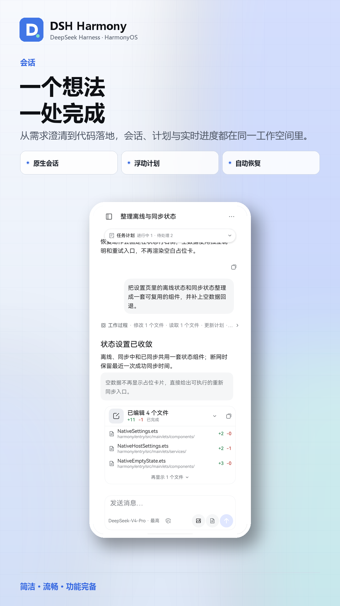
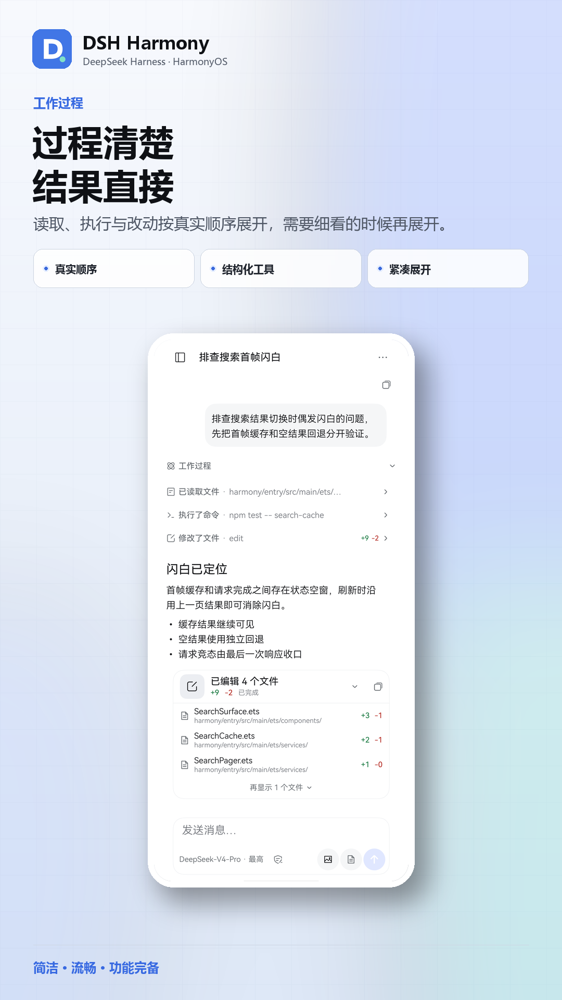
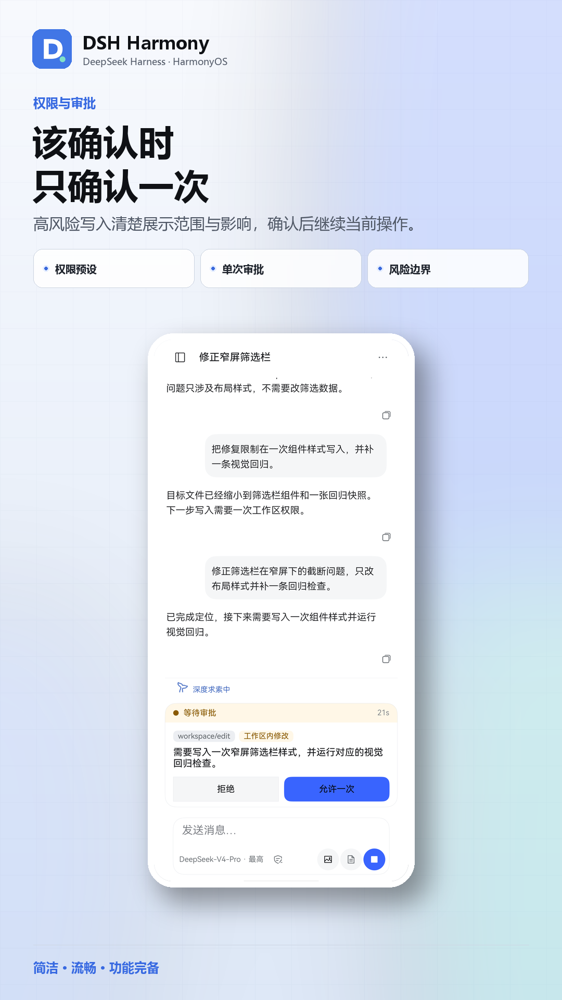
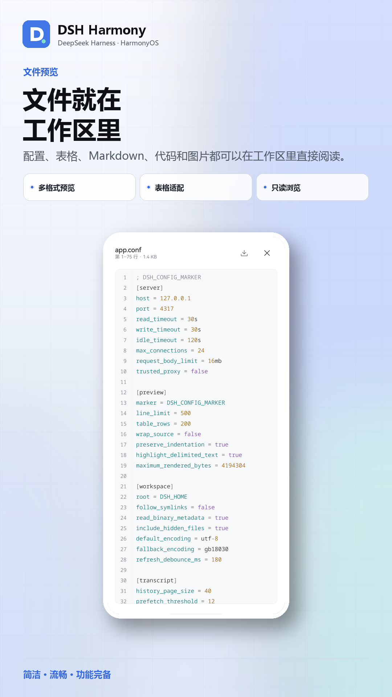
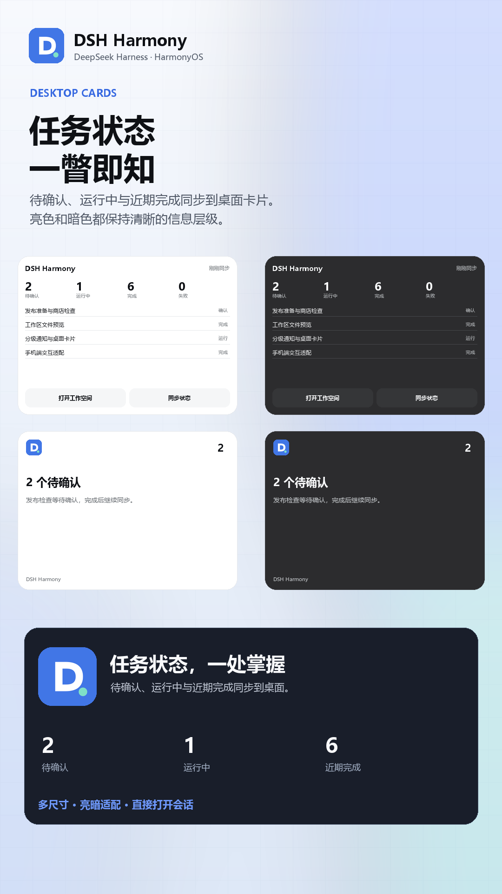

为手机重新设计的原生工作空间：会话、工具调用、审批、文件预览、插件与自动化留在同一条工作线上。ArkUI 构建，不是套壳网页。 A native workspace redesigned for phones — sessions, tool calls, approvals, file preview, plugins and automation on one working line. Built with ArkUI, not a WebView wrapper.
会话、工作过程、模型选择、权限、文件预览、插件和自动化都在 ArkUI 中实现；触控反馈、安全区、系统返回和减少动态效果都按 HarmonyOS 重新设计。 Sessions, process, model selection, permissions, file preview, plugins and automation are implemented in ArkUI, with touch feedback, safe areas, system Back and reduced motion redesigned for HarmonyOS.





桌面端的 Agent 搬到手机上，最常见的做法是套一个网页。DSH Harmony 把主界面重写成 ArkUI：只有 Passkey 认证页和 HTML 预览使用 ArkWeb。 Most mobile agent clients wrap the desktop web UI. DSH Harmony rebuilds the workspace in ArkUI; ArkWeb is used only for the Passkey page and HTML preview.
触控反馈、抽屉、页面动线、安全区和系统 Back 都为 HarmonyOS 重新实现，并尊重系统的减少动态效果设置。Press feedback, drawers, navigation, safe areas and system Back are rebuilt for HarmonyOS, respecting reduced-motion preferences.
会话、工具调用、计划与子代理谱系、审批、提问、文件预览、插件与自动化，都能在手机上完成。Sessions, tool calls, plan and subagent lineage, approvals, questions, file preview, plugins and automation — all on the phone.
Passkey 登录、分级通知、桌面服务卡片与 Push Kit，通知点开直接回到对应会话。Passkey sign-in, tiered notifications, home-screen service cards and Push Kit; tapping a notification returns to its session.
连接你自己的 DeepSeek Harness，不经过第三方中转；配套插件用一句提示词安装。AGPL-3.0。Connects to your own DeepSeek Harness with no third-party relay; the companion plugin installs from one prompt. AGPL-3.0.
需要一台运行 DeepSeek Harness 的机器，以及一台 HarmonyOS 7 / API 23+ 的 ARM64 设备。 You need a machine running DeepSeek Harness and a HarmonyOS 7 / API 23+ ARM64 device.
从 GitHub Releases 下载最新的 DSH-Harmony-<版本>-community-arm64.hap。Get the latest DSH-Harmony-<version>-community-arm64.hap from GitHub Releases.
把安装提示词发给 DSH，或在「插件 → Add plugin」粘贴 tarball 地址。Send the install prompt to DSH, or paste the tarball URL in Plugins → Add plugin.
dsh plugin --profile web add \
https://github.com/stlin256/DSH-Harmony/releases/download/plugin-v0.4.0/dsh-harmony-plugin-0.4.0.tgz打开 App，填写 DSH 服务地址，选择原生登录或 Passkey。Open the app, enter your DSH origin, and choose native login or Passkey.
早期社区版。Early community build. 项目仍在快速迭代，bug 较多；AppGallery 版本准备中，当前只能侧载社区版 HAP。社区版使用维护者证书签名，在自己的设备上安装需要用自己的 DevEco Studio 证书与 Profile 重新签名，或从源码构建。 The project is moving fast and still has bugs. The AppGallery build is in preparation; today you side-load the community HAP. It is signed with the maintainer's certificate — to install it on your own device, re-sign it with your own DevEco Studio certificate and profile, or build from source.
使用前需要自行部署或已获授权使用 DeepSeek Harness 服务；App 本身不提供模型、算力或账号。本项目与 DeepSeek 官方没有关联、合作或背书关系。 You need your own DeepSeek Harness deployment (or authorized access). The app provides no models, compute or accounts, and is not affiliated with or endorsed by DeepSeek.